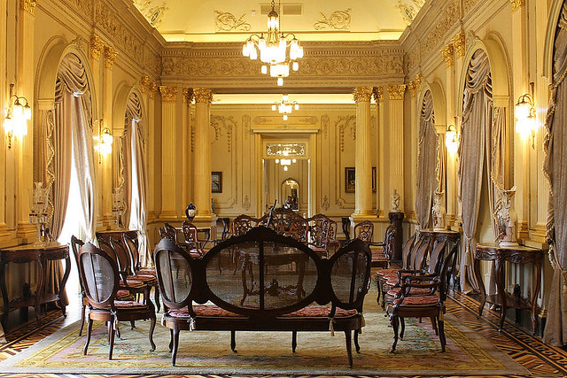

O Paço do Frevo é um espaço cultural dedicado à difusão, pesquisa, lazer e formação nas áreas da dança e música do frevo localizado na cidade do Recife, capital de Pernambuco, Brasil. Surgiu através de uma parceria entre a Prefeitura do Recife, a Fundação Roberto Marinho, o IPHAN e o Governo Federal.
Visite o Palacio Campo das Princesa

O Palácio do Campo das Princesas é a sede administrativa do poder executivo do estado brasileiro de Pernambuco, localizada na cidade do Recife